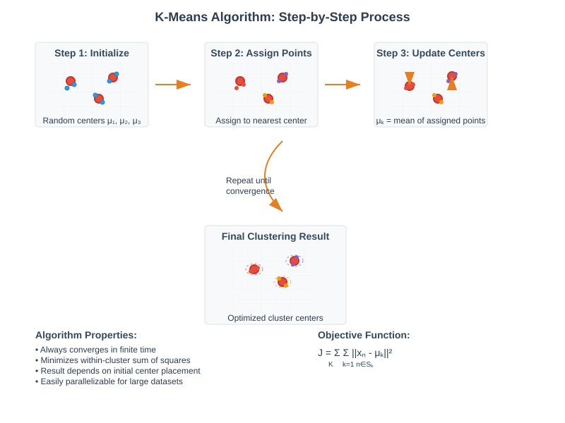
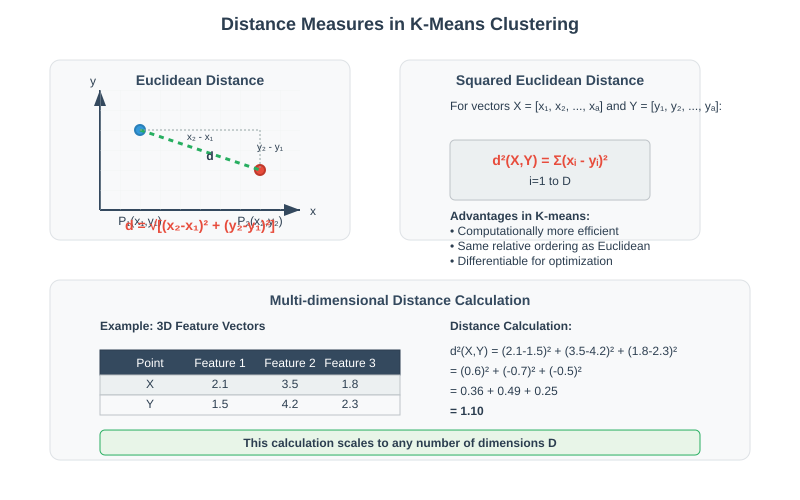
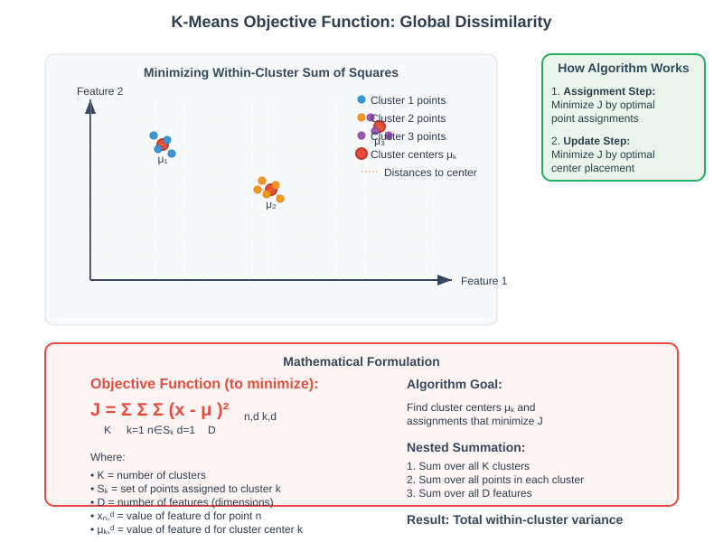
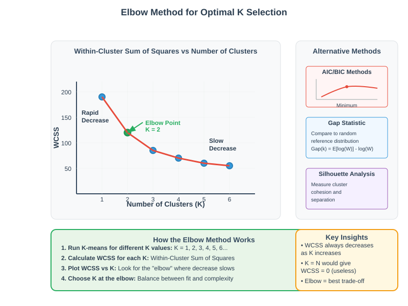
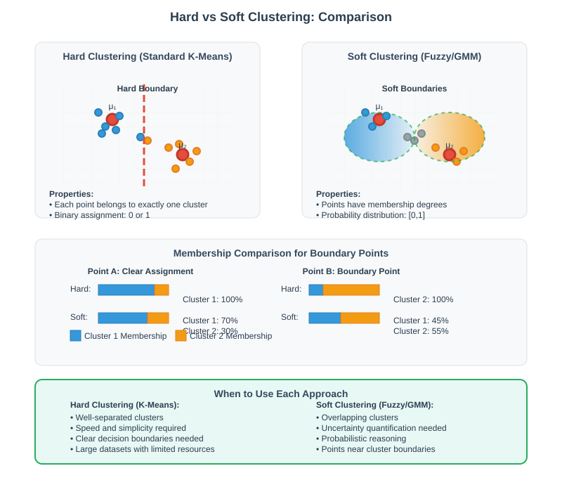

K-Means Clustering: Complete Guide
🚀 Quick Navigation
- Introduction
- K-Means Fundamentals
- The K-Means Algorithm
- Choosing the Optimal K
- Clustering Variants
- Mathematical Framework
- Implementation Considerations
- References & Further Reading
📊 Introduction
K-Means clustering is arguably the most popular algorithm in unsupervised learning, widely used for grouping data points according to similarity. This comprehensive guide covers the theoretical foundations, practical implementation, and advanced considerations for K-means clustering.
Why K-Means is Popular:
- Speed: Simple and quick algorithmic steps
- Scalability: Easily parallelizable across multiple cores/processors
- Simplicity: Straightforward to understand and implement
- Minimal Parameters: Requires fewer parameter tweaks than alternatives

🔬 K-Means Fundamentals
Core Assumptions
The K-means algorithm operates under several key assumptions:
- Known K-value: The number of clusters K must be specified in advance
- Continuous Features: Data points must be expressible as vectors of continuous values
- Euclidean Distance: Uses squared Euclidean distance as the dissimilarity measure
Data Representation
Each data point is represented as a feature vector:
X = [x₁, x₂, ..., xₐ]
Where D is the number of features (dimensions).
Distance Measures
Euclidean Distance between two points (X₁, Y₁) and (X₂, Y₂):
d = √[(x₂ - x₁)² + (y₂ - y₁)²]
Squared Euclidean Distance (used in K-means):
d² = (x₂ - x₁)² + (y₂ - y₁)²
General form using summation:
d²(X,Y) = Σᵢ₌₁ᴰ (xᵢ - yᵢ)²

⚙️ The K-Means Algorithm
Algorithm Overview
The K-means algorithm (also known as Lloyd's algorithm) follows these iterative steps:
- Initialize K cluster centers randomly
- Assign each data point to the nearest cluster center
- Update cluster centers to the mean of assigned points
- Repeat steps 2-3 until convergence
Global Dissimilarity (Objective Function)
The algorithm minimizes the global dissimilarity:
J = Σₖ₌₁ᴷ Σₙ∈Sₖ Σᵈ₌₁ᴰ (xₙ,ᵈ - μₖ,ᵈ)²
Where: - K = number of clusters - Sₖ = set of points assigned to cluster k - μₖ = cluster center for cluster k - D = number of features
Parallelization Advantages
The distance calculations can be performed independently for each data point, making K-means embarrassingly parallel. This allows:
- Distribution across multiple cores/processors
- Significant speedup in execution time
- Scalability to large datasets

Convergence Properties
- The algorithm always converges in finite time
- Convergence occurs when no data point changes cluster assignment
- Final result depends on initial cluster center placement
🎯 Choosing the Optimal K
The K Selection Problem
One of the primary challenges in K-means is determining the optimal number of clusters, as this is rarely known in advance.
Popular Heuristic Methods
1. Elbow Method
Plot global dissimilarity vs. number of clusters (K):
- The objective function always decreases as K increases
- Look for an "elbow" where the rate of decrease suddenly slows
- The elbow point suggests the optimal K value

2. Information Criteria (AIC/BIC)
Add penalty terms to the objective function:
Modified Objective = Original K-Means Objective + Penalty(K)
Penalties include: - AIC (Akaike Information Criterion) - BIC (Bayesian Information Criterion)
These methods explicitly account for model complexity, creating a non-trivial minimum for K selection.
3. Gap Statistic
Compare within-cluster dispersion to expected dispersion under null reference distribution.
Hierarchical Considerations
Sometimes there's no single "correct" K value. Consider biological taxonomy:
- Small K: Groups organisms by species
- Medium K: Groups by genus or family
- Large K: Groups by order or higher taxonomic levels
Each level provides meaningful, but different, clustering insights.
🔄 Clustering Variants
Hard vs. Soft Clustering
Hard Clustering (Standard K-means)
- Each data point belongs to exactly one cluster
- Binary assignment: point either belongs or doesn't belong
- Clear cluster boundaries
Soft Clustering
- Data points can have partial membership in multiple clusters
- Useful for points near cluster boundaries
- Provides probability distributions over cluster assignments
Alternative Algorithms for Soft Clustering: - Fuzzy C-means clustering - Gaussian Mixture Models (GMM)

Hierarchical Alternatives
When cluster hierarchy is important, consider:
- Agglomerative Clustering: Bottom-up approach
- Divisive Clustering: Top-down approach
- Dendrogram Visualization: Shows cluster relationships at different levels
📐 Mathematical Framework
Optimization Problem
K-means solves the following optimization problem:
minimize: Σₖ₌₁ᴷ Σₙ∈Sₖ ||xₙ - μₖ||²
Subject to: - Each point assigned to exactly one cluster - Cluster centers are means of assigned points
Update Rules
Cluster Assignment:
cᵢ = argmin_k ||xᵢ - μₖ||²
Cluster Center Update:
μₖ = (1/|Sₖ|) Σₙ∈Sₖ xₙ
Convergence Analysis
The algorithm is guaranteed to converge because:
- The objective function is bounded below (≥ 0)
- Each iteration cannot increase the objective value
- There are finite possible assignments
💻 Implementation Considerations
Initialization Strategies
Random Initialization
- Select K points uniformly at random from data points
- Simple but can lead to poor local optima
K-means++ Initialization
- Choose initial centers with probability proportional to squared distance from nearest existing center
- Generally produces better clustering results
- Provides theoretical guarantees on solution quality
Computational Complexity
- Time Complexity: O(n·K·d·i)
- n = number of data points
- K = number of clusters
- d = number of dimensions
-
i = number of iterations
-
Space Complexity: O(n·d + K·d)
Practical Tips
- Standardize Features: Ensure all features have similar scales
- Multiple Runs: Run algorithm multiple times with different initializations
- Convergence Criteria: Use both assignment changes and objective function improvement
- Memory Optimization: Use mini-batch K-means for large datasets
Common Pitfalls
- Curse of Dimensionality: Performance degrades in very high dimensions
- Non-spherical Clusters: K-means assumes roughly spherical cluster shapes
- Outlier Sensitivity: Single outliers can significantly affect cluster centers
📚 References & Further Reading
📖 Academic Papers
- Lloyd, S.P. (1982): "Least squares quantization in PCM" - Original K-means paper
- Arthur, D. & Vassilvitskii, S. (2007): "K-means++: The advantages of careful seeding"
- Hastie, T., Tibshirani, R., & Friedman, J. (2009): "The Elements of Statistical Learning"
🔗 Online Resources
- Scikit-learn Documentation: K-Means Clustering
- Google Colab:

🤗 Hugging Face Models
- Clustering Models: Hugging Face Clustering
- Embeddings for Clustering: Pre-trained models for feature extraction
📊 Advanced Topics
- Mini-batch K-means: For large-scale datasets
- Fuzzy C-means: Soft clustering alternative
- Spectral Clustering: For non-convex cluster shapes
- DBSCAN: Density-based clustering without pre-specified K
🛠️ Implementation Libraries
- Python: scikit-learn, KMeans, scipy.cluster
- R: stats::kmeans, cluster package
- Julia: Clustering.jl
- Spark: MLlib K-means for distributed computing